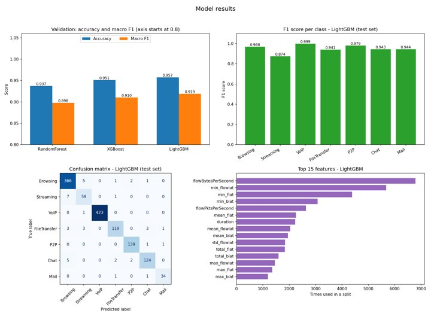
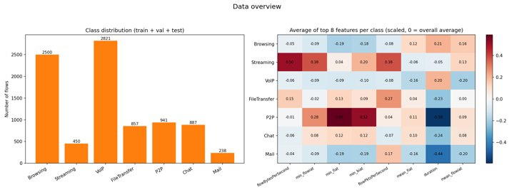
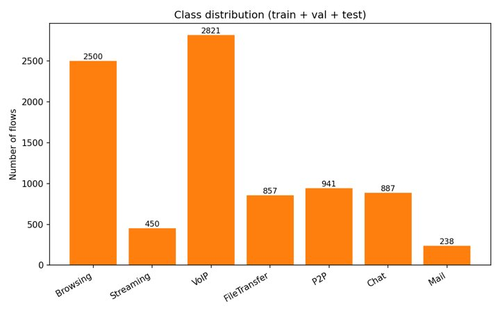
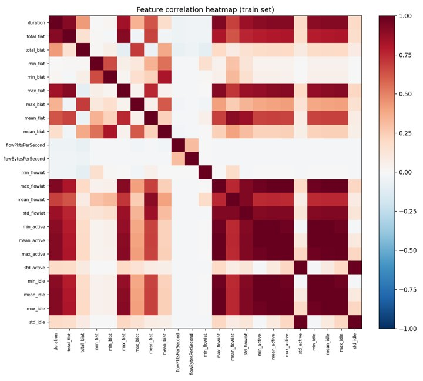
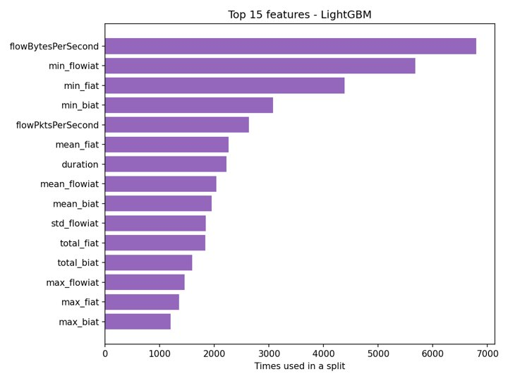
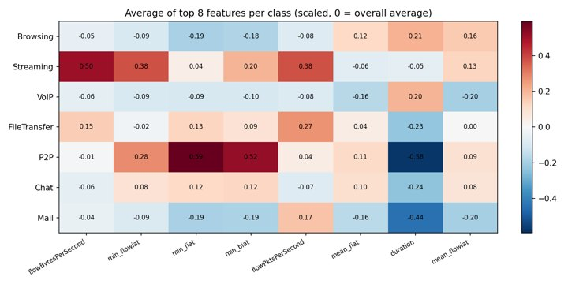
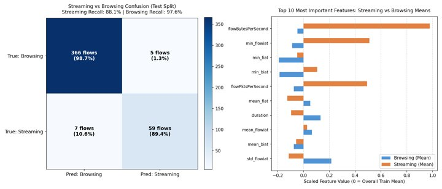
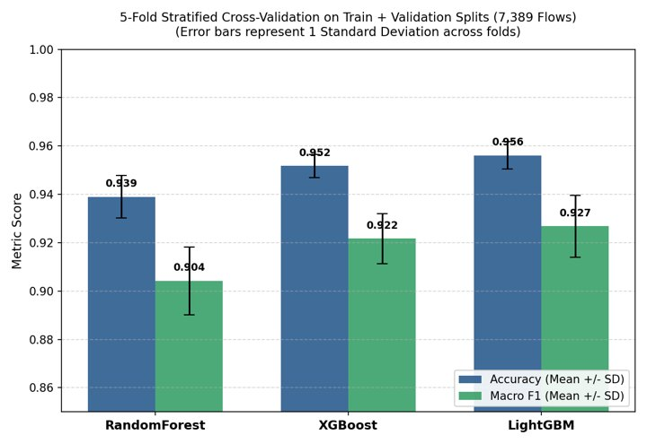
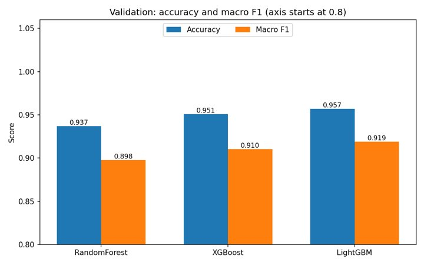
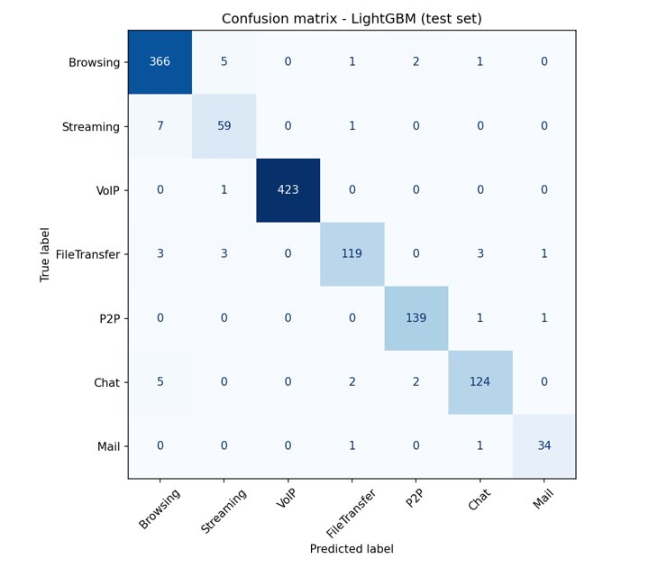

A timing classifier
The classifier takes the shape of your traffic, VoIP call, web page, stream, download, chat, inbox.
Zero payload23 timing features2.3 ms per flow
One timing layer reads encrypted flows — handshake, bursts, idle gaps — and names the application without opening a single packet.
Per-flow latencylog scale · lower is faster
- DPI100–500 ms
- Deep learning · GPU15–40 ms
- Random Forest3.8 ms
- XGBoost3.2 ms
- MetaFlow · LightGBM2.31 ms
Built for
speed.
2.31 ms per flow on CPU · reports/metrics.json
Capabilities
Five parts.
One pipeline.
Demo · selected moments
Watch the full demoFrom a raw capture to an explained verdict.


- VoIP.999
- Browsing.968
- Streaming.874
- FileTransfer.941
- P2P.979
- Chat.943
- Mail.944
Every app
has a pulse.
Seven classes · 23 timing features · zero payload inspection









Charts take
shape.
The stack
Built on
good company.
The open-source stack under the hood
- PythonLanguage
- ScapyPackets
- LightGBMModel
- scikit-learnML
- XGBoostBaseline
- pandasData
- NumPyArrays
- StreamlitDashboard
- ollamaLocal LLM
- dockerDeploy
- pytestTests
- GitHubActionsCI
Versus
Ahead of the
old ways.
Four approaches · seven things that matter
| What matters | Deep packet inspection | IP / port rules | Deep learning (CNN / LSTM) | MetaFlow |
|---|---|---|---|---|
| Encrypted traffic (TLS 1.3, QUIC) | ✕ Fails completely | ✕ Port 443 hides everything | ✓ Works | ✓ 96.9% test accuracy |
| Privacy and compliance | ✕ Conflicts with GDPR / HIPAA | ! Privacy concerns | ✓ Preserved | ✓ No payload inspected, ever |
| Raw capture ingestion | ✕ Needs decryption keys | ! Headers only | ! Byte truncation | ✓ Native .pcap / .pcapng flows |
| Port and IP evasion | ✕ Vulnerable | ✕ Easily bypassed | ✓ High | ✓ Rhythm is hard to spoof |
| Inference latency | ✕ 100 to 500 ms | ✓ Under 1 ms | ✕ 15 to 40 ms on GPU | ✓ About 2.3 ms on CPU |
| Explainability | ! Plain logs | ✕ None | ✕ Black box | ✓ Plain-language reasons |
| Deployment cost | ✕ Heavy hardware | ! Cheap but inaccurate | ✕ GPU middleboxes | ✓ Lightweight CPU |
How the pipeline works
Headers lead.
Payload never follows.
- 01 / Capture
Scapy · .pcap / .pcapng
Parses IPv4/IPv6 headers and TCP/UDP ports; payload bytes discarded as read.
- 02 / Extract
5-tuple flows · 23 features
Builds bidirectional flows and computes inter-arrival, rate, burst and idle statistics.
- 03 / Classify
Scaler · LightGBM
Train-only scaler, then the top class and full probability spread.
- 04 / Explain
3-tier router · threshold
A networking reason for every verdict; low confidence becomes Unknown.
Private. Precise. Instant.
By the numbers
Twenty-three numbers.
One verdict.
-
96.9%
held-out test accuracy on 1,305 flows the model never saw
-
2.3 milliseconds
per flow on a CPU, more than 400 flows a second
-
23
timing features per flow: inter-arrival, rate, burst and idle
-
7
application classes, from VoIP and Streaming to P2P and Mail
-
8,694
clean flows from the ISCX VPN-NonVPN 2016 benchmark
-
32
tests passing in CI on every push
-
0
payload bytes read. Headers in, payload discarded.
-
Read the rhythm.
All benchmarks
Not the payload.
Why timing
Measured, not decrypted.
Deep packet inspection hands every packet down a chain: keys, decryption, payload inspection, signature rules. MetaFlow puts one timing layer between the encrypted packet and the answer, and never opens the payload.
| Approach | Chain | Handoffs | Latency |
|---|---|---|---|
| Deep packet inspection | Encrypted packet → TLS keys and decryption → Payload inspection → Signature rules → Verdict | 4 | 100 to 500 ms |
| MetaFlow | Encrypted packet → Timing layer (23 features, LightGBM) → Verdict and reason | 1 | about 2.3 ms |
IllustrationNo keys. No payload. No decryption.
The analyzer
A verdict in milliseconds.
Capture in. Verdict out. Payload untouched. Pick one of the sample captures and MetaFlow builds the flows, runs the trained LightGBM model and explains the call in plain language. Raise the threshold and anything uncertain is flagged as Unknown.
A verdict in milliseconds.
Pick one of the four captures in data/sample_pcaps. MetaFlow builds the flows, runs the trained LightGBM model, and explains the call. Raise the threshold to see unknown-traffic detection kick in.
Served by web/server.py, this calls the real model. Opened as a file, it replays a snapshot the same model produced at build time.
127.0.0.1:8600The real model on the repo's sample captures
Good to know.
How can you classify traffic you cannot decrypt?
Encryption hides what a packet says, not when it moves. A voice call sends a small frame every 20 ms. A file transfer fills the pipe one way. A web page loads in bursts and then goes quiet while someone reads. MetaFlow measures 23 of these timing statistics per flow and lets a LightGBM model learn which rhythm belongs to which application.
Does it ever look at payload?
No. The PCAP extractor parses IP and transport headers to build flows and drops payload bytes as it reads them. The model only ever sees timing statistics, so there is nothing personal to leak and no decryption keys to manage.
How accurate is it, honestly?
96.9% accuracy and 0.950 macro F1 on 1,305 held-out flows that were never used for training or tuning. Five-fold cross-validation gives 95.61% ± 0.57%. The weakest class is Streaming (F1 0.874), because buffered video inside a 15 s window can look like page-load bursts. That trade-off is documented in the reports.
What happens with traffic it has never seen?
You set a confidence threshold. Any flow whose top probability falls below it is labelled Uncertain (Unknown Traffic) instead of being forced into the nearest class, so new protocols end up in a triage queue rather than in your statistics.
Does it need a GPU or the internet?
Neither. Inference is about 2.3 ms per flow on a CPU, more than 400 flows a second. Explanations fall back to a built-in rule engine when no local Ollama model or cloud key is available, so the whole thing runs offline.
Get started
Classify
without looking.
Clone the repo, point it at a capture, and get a labelled, explained flow in about a minute. Everything runs on your machine.
Read the rhythm.
Not the payload.